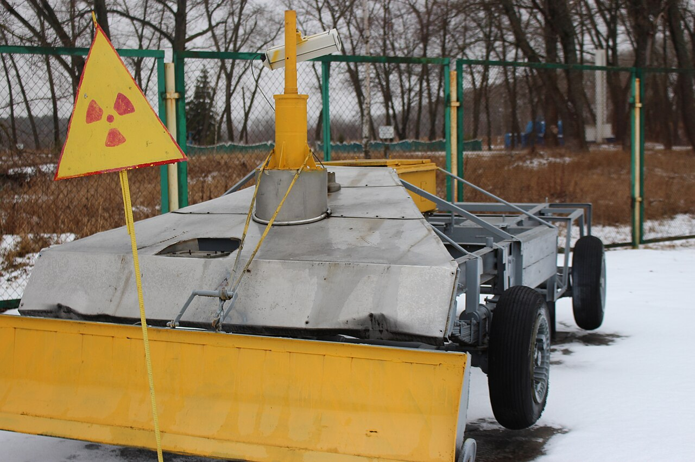
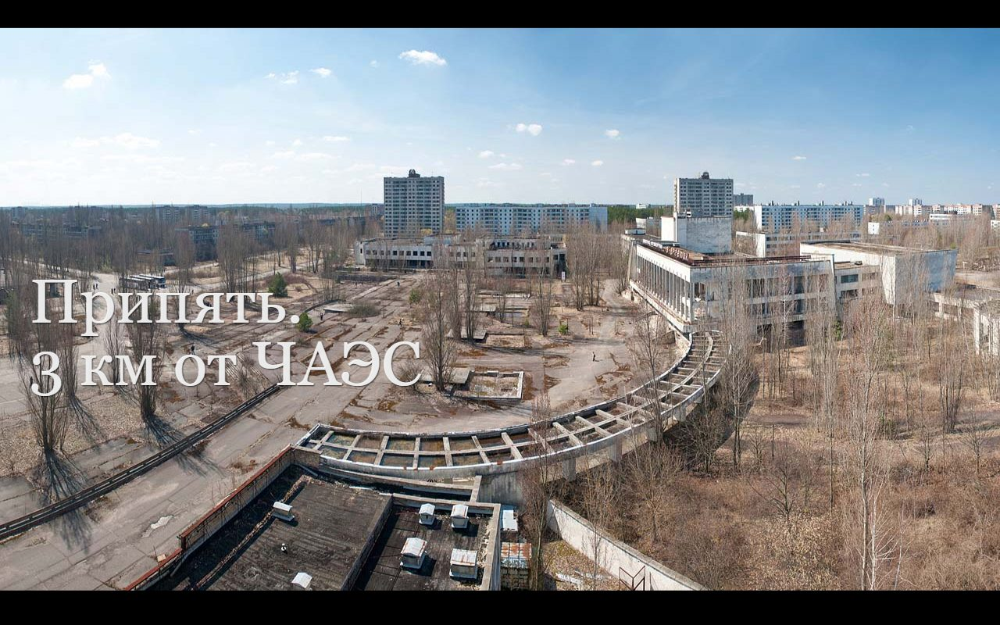

Земля
отчуждения
Анализ мультимедийного спецпроекта ИД «Коммерсантъ» (2014)
51°23′ с. ш. 30°06′ в. д. · kommersant.ru/projects/chernobyl

Скролл-лонгрид с параллаксом, выпущенный к годовщине аварии (26.04.2014, дополнен в 2016). Читатель «едет» по зоне от КПП к реактору и дальше, к самосёлам: каждая глава привязана к расстоянию от ЧАЭС.
≈34,5 тыс. знаков · 9 глав · 8 видео · 3 аудио (дозиметр, птицы) · ~170 фото · 3D-ролик · панорама · таймлайн · RU/EN
О Чернобыле знают по мифам, играм (S.T.A.L.K.E.R.) и разрозненным фото. Нет одного места, где факты, хронология и «как там сейчас» собраны вместе и проверены.
Имидж качественного медиа, трафик и время на странице к памятной дате, зарубежная аудитория через EN-версию, рекламный инвентарь.




IT-специалист, фанат S.T.A.L.K.E.R. и сериала HBO
Устройство: смартфон вечером, в метро; десктоп дома
Медиа: YouTube, Rutube, Telegram, DTF
Контекст: «залип» после игры, хочет понять, как зона выглядит на самом деле
JTBD: «за один вечер отделить реальную Зону от игровой»
Учитель истории и ОБЖ
Устройство: ноутбук и проектор в классе
Медиа: Коммерсантъ, ТАСС, Дзен, учительские паблики VK
Контекст: готовит урок к 26 апреля, нужны проверенные цифры и видео
JTBD: «собрать хронологию и показать классу видео за 30 минут подготовки»
Инженер-энергетик, сын ликвидатора
Устройство: планшет на диване
Медиа: подписчик «Коммерсанта», ТВ-документалки
Контекст: годовщина, хочет увидеть, что стало с местами, о которых рассказывал отец
JTBD: «вспомнить и показать семье, как живёт зона сейчас»
Портреты гипотетические. Для проверки планируется: 5 глубинных интервью (по 1–2 на персону), онлайн-опрос 50 человек в профильных пабликах (сообщества S.T.A.L.K.E.R., учительские, чернобыльские) и анализ глубины скролла и тепловых карт: на странице уже стоит Яндекс.Метрика (Вебвизор).

| Критерий | Значение | Обоснование |
|---|---|---|
| По целевому назначению | Общественно-политическое / научно-популярное (документальное) | Журналистский репортаж и популярное объяснение физики аварии и её последствий для широкой аудитории |
| По природе основной информации | Мультимедийное | Текст, фото, видео, аудио, 3D-ролик и панорама равноправны и не заменяют друг друга |
| По технологии распространения | Сетевое | Доступно только онлайн на kommersant.ru, медиа подгружается с сервера |
| По характеру взаимодействия | Интерактивное (с детерминированным сценарием) | Пользователь управляет скроллом, запуском видео и звука, панорамой, но порядок глав задан автором |
| По периодичности | Непериодическое (с разовым обновлением) | Выпущено один раз в 2014 году, в 2016-м добавлен блок о строительстве нового саркофага |

Тема катастрофы перегружена цифрами и мифами, и сухая справка не даёт её «прожить». Ставка сделана на эффект присутствия: ощущение поездки и встречи с людьми. Справочный слой встроен в нарратив, чтобы погружение опиралось на проверенные факты, а не только на эмоцию. Утилитарно-практического типа нет: товара или инструмента проект не предлагает.

Документальное путешествие по Чернобыльской зоне, где каждое место становится главой, а расстояние до реактора служит навигацией.
Мифы и разрозненные факты → один проверенный нарратив, где хронология, наука и живые люди связаны маршрутом.
Взрослые 20–60 лет, интересующиеся историей и наукой: «сталкеры по интересу», педагоги, люди с личной связью с Чернобылем.
Глубина деловой журналистики, атмосфера мультимедиа и двуязычность. У конкурентов есть либо 360°-картинка, либо хроника, либо скорость.
Адаптивный веб-лонгрид с параллакс-прокруткой, видео, эмбиент-аудио, таймлайном, 3D-роликом и панорамой.
Тёмная приглушённая палитра, крупная фотография. Тон сдержанный и документальный, без сенсационности.